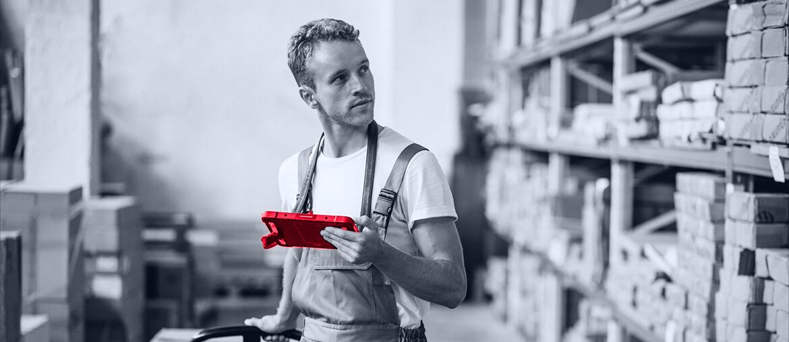

Continuous Microservices Development for Warehouse Management
Backend, mobile, QA, and service work reduced manual label work, errors, and operational overhead.
Read the case studyA short engineering brief for keeping LoadOps and related transport workflows stable while new AI and load-board features keep moving.
We saw Optym hiring a Senior Software Engineer for backend Node.js. That usually means the product team needs more service capacity, not just another pair of hands.
Optym is hiring a Senior Software Engineer for backend Node.js, which points to load behind its transport products. LoadOps is not a simple app. The driver app, web TMS, load boards, GPS, documents, and settlements all depend on clean service contracts. Public reviews name login, document upload, missing loads, and driver-settlement issues. If these flows regress while LoadAi, RouteMax, and LoadOps keep adding features, releases slow down and support gets louder. Rajesh's team likely needs extra backend capacity without pulling core engineers from roadmap work.
Harden login, document upload, map handoff, and settlement data. Then tie automated regression checks to release notes and store-review themes.
Map the Node.js services behind load boards and dispatch events. Add contract tests where web and mobile state can drift.
One tech lead, three senior backend engineers, one QA automation engineer, and one DevOps engineer for a six-week pilot.
Follow auth, load-board, document, GPS, and settlement events from web action to driver app result.
Add API and data-contract tests around organization config, driver permissions, load state, and settlement updates.
Create a regression pack for login, BOL upload, trip edits, map handoff, and load booking.
Add dashboards and alerts so support can see failed uploads, auth loops, and state drift fast.

Backend, mobile, QA, and service work reduced manual label work, errors, and operational overhead.
Read the case study
React Native and TypeScript app work helped drivers accept tasks and stream live location updates.
Read the case study